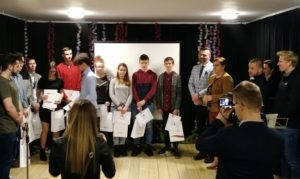
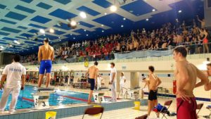

Tytuł artykułu pierwszego
3 grudnia w Piwnicy Artystycznej Młodzieżowego Domu Kultury w Oświęcimiu odbyła się uroczystość podsumowująca projekt edukacyjny „Stwórz z nami aplikację” adresowany do uczniów szkół powiatowych. Podstawą do stworzenia programu miała być publikacja dr Andrzeja Strzeleckiego pt. „Topografia Pamięci. Miejsca pamięci o ofiarach Auschwitz i bohaterach ruchu oporu w latach 1939-1945 znajdujące się na Ziemi Oświęcimskiej”. Projekt zainicjowało Muzeum Pamięci Mieszkańców Ziemi Oświęcimskiej. Do pracy nad aplikacją zgłosiło się kilkunastu uczniów z czterech szkół średnich powiatu oświęcimskiego, z czego połowę tworzył zespół młodych informatyków z klasy I inf G w składzie Julia Chmura, Jakub Gałuszka, Jakub Joniec, Mateusz Kania, Krystian Korbel, Dawid Spisak, Kamil Rybarski. Chociaż byli najmłodszą wiekowo grupą spośród reprezentantów pozostałych szkół, to podczas uroczystości podsumowującej projekt organizatorzy wypowiadali się o nich w samych superlatywach.Tytuł artykułu drugiego
 Drugi rok z rzędu tytułem najlepszej szkoły mistrzostwa sportowego i sumą 2053 punktów zakończyła się pierwsza runda Ligi Szkół Mistrzostwa Sportowego dla Naszych pływaków.Zachęcamy również do lektury relacji medialnych. Odnośniki znajdują się do wglądu pod tekstem. O sukcesach pływaków z naszej szkoły można poczytać również na łamach grudniowych wydań regionalnej prasy. Wśród żeńskiej reprezentacji grodu nad Sołą, świetnie prezentowały się; Dominika Kossakowska, Daria Nita,Zuzanna Famulok, Zuzanna Nowak, Anna Kempa i Marta Klimek.Równie dobrze wypadła męska część ekipy, a więc; Mateusz Dubas, Przemysław Suchański ,Oskar Cieśla, Wiktor Grzegorczyk, Kamil Sieradzki, Jakub Kwaśny, Wojciech Ogrodnik, Mateusz Mamcarz i David Szczygieł.